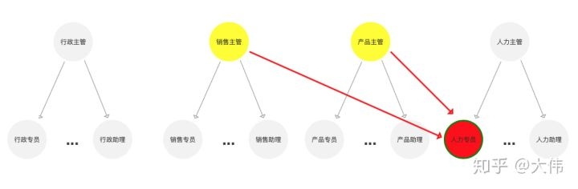
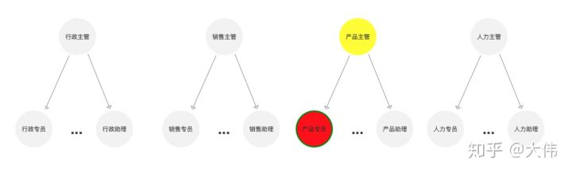

用户权限管理
2020.03.30 @wsl
RBAC
概念
RBAC（Role-Based Access Control）基于角色的访问控制。这是从传统的权限模型基础上，改进而来并且相当成熟的权限模型。这里强调三个要素：用户、角色、权限。用户与角色是多对多关系，角色与权限是多对多关系。
传统模型中无角色概念，直接为用户赋上权限，一是导致配置权限相当麻烦，二来无法快速为多个用户批量删除权限。用户—角色—权限多对多的关系，解决了这些问题。
关键元素：
- 用户：成功认证并登录系统的操作员
- 角色：权限的集合体
- 权限：访问和操作资源的许可，如删除、编辑、审批等
- 资源：被安全管理的对象，如系统菜单、页面、按钮等
角色的作用：
通过业务流程确定一个角色，实际是确定角色和角色具备的哪些权限的过程。所以角色是权限的集合，是众多权限颗粒组成。
通过把权限给这个角色，再把角色给用户，从而实现用户的权限，因此它承担了一个桥梁的作用。
引入角色这个概念，可以帮助我们灵活的扩展，使一个用户可以具备多种角色。
总结：
【用户(user：谁)】被赋予【角色(role：具有1-n个权限)】，通过角色关联的【权限(permit：许可)】去访问/操作【资源(resource)】
为什么需要RBAC
传统模型中无角色概念，用户直接被赋予权限；
1、 导致配置权限相当麻烦
2、 无法快速为多个用户批量删除/编辑权限
3、 用户多身份下权限配置维护麻烦
用户—角色—权限多对多的关系，解决了这些问题，权限修改只需对角色的关联权限进行修改。
若多身份，只需多用户进行多角色赋予即可。
权限通过角色来赋予至用户，使得用户即使发生变更、离职也不会影响权限本身的稳定性。
RBAC模型
根据RBAC的复杂度不同，可分为RBAC0，RBAC1，RBAC2，RBAC3。最常用的为RBAC0。
RBAC0模型
“用户- 角色- 权限”的授权模型。
将一个或多个权限挂到角色下，再将一个或多个角色赋予用户。用户与角色之间，角色与权限之间，一般都是多对多的关系。
场景。为财务经理岗建立财务经理角色，将对账、付款审批、回款确认等权限配置在财务经理角色下，则公司再更换财务经理人员，只需每次为新来的财务经理配置财务经理角色。
RBAC1模型
基于RBAC0模型，引入角色间的继承关系，即角色上有了上下级的区别。
角色间的继承关系可分为一般继承（General）和受限继承（Limited）。
一般继承关系
要求角色继承关系是一个绝对偏序关系，允许角色间的多继承。
受限继承关系
进一步要求角色继承关系是一个树结构，实现角色间的单继承。
受限继承则增强了职责关系的分离。
图例：
一般继承：

受限继承：受限继承可以有多个父节点，但子节点只能有一个，是一个反向树结构。

场景。适用于角色之间的层次明确，如总经理与副总经理，业务部门如总经理–团队经理–业务员。也适用于用户分级管理，初级用户只能使用部分功能，中级用户能够使用更多功能。
举例：所有role_Sales（业务员）的权限role_Mgr（部门经理）都具有，那么即 role_Mgr 继承自 role_Sales。
RBAC2模型
在RBAC0基础之上，加入了角色的访问控制，实现了责任分离。
规定了权限被赋予角色时，或角色被赋予用户时，以及当用户在某一时刻激活一个角色时所应遵循的强制性规则。
包括静态职责分离SSD(Static Separation of Duty)和动态职责分离DSD(Dynamic DSD(Dynamic Separation of Duty)。
约束（Constraining）和 用户– 角色– 权限一起决定了RBAC2模型下用户的访问许可。
静态职责分离（SSD）
当角色授权给用户时，需要判断当前用户是否被赋予了一个与新角色冲突的角色，冲突的角色位一个二元关系，任何一个用户在此场景下只能拥有其中一个角色。
动态职责分离（DSD）
在角色分配时可以将冲突的角色赋予给同一个用户，但是在用户使用系统时，一次会话中不能同时激活两个角色。
RBAC2对角色的限制：
- 角色互斥（SSD） ：同一用户只能分配到一组互斥角色集合中至多一个角色，支持责任分离的原则。案例：在审计活动中，一个角色不能同时被指派给会计角色和审计员角色。
- 基数约束（SSD） ：一个角色被分配的用户数量受限；一个用户可拥有的角色数目受限；一个角色的权限数目受限。案例：如VP类角色不可随意分配给多个用户。
- 先决条件角色（SSD） ：指要想获得较高的权限，要首先拥有低一级的权限。案例：先有副总经理权限，才能有总经理权限。
- 运行时互斥（DSD） ：例如，允许一个用户具有两个角色，但不可同时激活这两个角色。
RBAC3模型
RBAC1+RBAC2的集合体。即支持角色间的继承关系，又支持角色间的责任分离关系。一般无需如此全面负责的模型。
权限设计基本的模块划分
权限设计基本围绕权限本身相关资源展开，核心包含用户、权限、角色等。
用户管理
用户为系统使用者，对应实际环境的员工。用户具有一个或多个角色。
用户的管理包括用户的创建、删除、编辑、查询、激活、禁用、角色授权等。
用户组管理
用户所属组，用于配置统一组同一部门用户。有了用户组，在新建角色时，可直接将角色赋予某个组，则进入此组的人员自动获得对应角色。
角色管理
所有角色的管理功能。角色具有一个或多个权限。
包括角色的创建、删除、编辑、激活、禁用、权限授权等。
权限管理
权限管理从功能操作（页面+功能）、数据管理两个不同颗粒度等级来考量的。
权限的抽取可以是开发层面随着项目的迭代同时进行权限的控制，也可以做成后台进行统一管理。
权限颗粒– 功能菜单权限
粗力度权限控制，获得当前权限后页面所有数据可查看或操作。
每个菜单对应一个权限，可以进行菜单的创建、删除、编辑等。
权限颗粒– 功能操作权限
比菜单权限更细化，具象到不同角色即使看到相同数据，所具备的操作管理权限也不一样。
权限颗粒– 数据字段权限
最细颗粒的权限控制，实现了不同角色进入后，看到的数据字段都会不同。